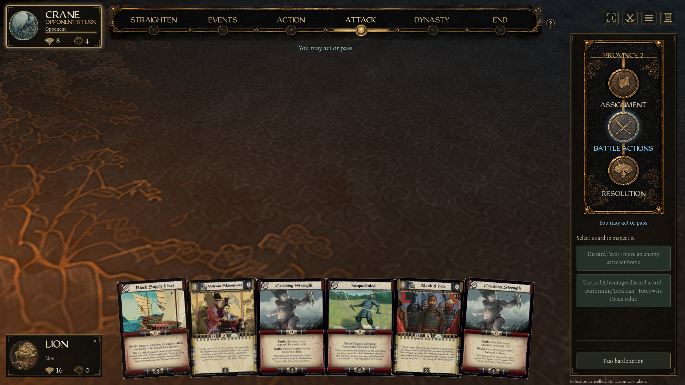

Approved Topaz mat · native review
6688 × 3764 · lossless WebP · 18.98 MiB · mipmaps enabled
The optimized texture is now the default in this preview. Its decoded pixels exactly match the Lanczos reduction of the supplied Topaz master. The 73.73 MiB master is preserved, and the game's existing projection and lighting remain in place.
Controlled fabric comparison
 Left: original 1672 × 941. Right: approved 6688 × 3764 Topaz derivative. Identical review cameras, UV coordinates and colour treatment; extra procedural weave off. Click an image to inspect its full resolution.
Left: original 1672 × 941. Right: approved 6688 × 3764 Topaz derivative. Identical review cameras, UV coordinates and colour treatment; extra procedural weave off. Click an image to inspect its full resolution.In the game · overview
 3440 × 1440 native Godot capture. The new texture is the default; layout, lamp animation and camera limits are unchanged. Click an image to inspect its full resolution.
3440 × 1440 native Godot capture. The new texture is the default; layout, lamp animation and camera limits are unchanged. Click an image to inspect its full resolution.In the game · maximum zoom
 3440 × 1440 at the existing 2.0 zoom limit. The original master stays untouched; this is the lossless 6688 × 3764 runtime derivative. Click an image to inspect its full resolution.
3440 × 1440 at the existing 2.0 zoom limit. The original master stays untouched; this is the lossless 6688 × 3764 runtime derivative. Click an image to inspect its full resolution.In the game · gold at maximum zoom

1920 × 1080 at zoom 2.0, launched through Play Latest.command. Native input checks passed. This extreme view is included to show the practical limits of the upscale. Click an image to inspect its full resolution.Wood frame · prototype only
 Right: independent beveled geometry and wood sides under the approved atlas. This frame is ready for its own design pass; it has not replaced the live painted rim. Click an image to inspect its full resolution.
Right: independent beveled geometry and wood sides under the approved atlas. This frame is ready for its own design pass; it has not replaced the live painted rim. Click an image to inspect its full resolution.Full source composition
 Original flat image at left; Topaz derivative on the separate-frame prototype at right. Click an image to inspect its full resolution.
Original flat image at left; Topaz derivative on the separate-frame prototype at right. Click an image to inspect its full resolution.Top view
 Matching artwork placement. The original .blend still packs the small source image; Godot overrides materials with the new runtime texture. Click an image to inspect its full resolution.
Matching artwork placement. The original .blend still packs the small source image; Godot overrides materials with the new runtime texture. Click an image to inspect its full resolution.